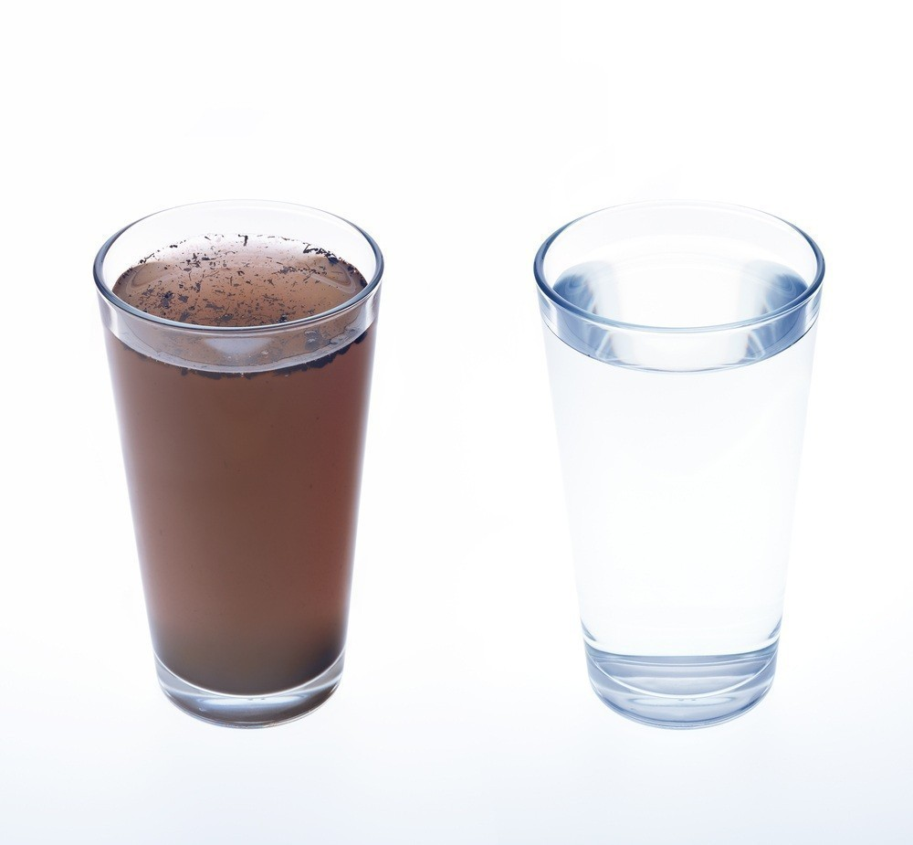
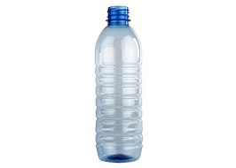
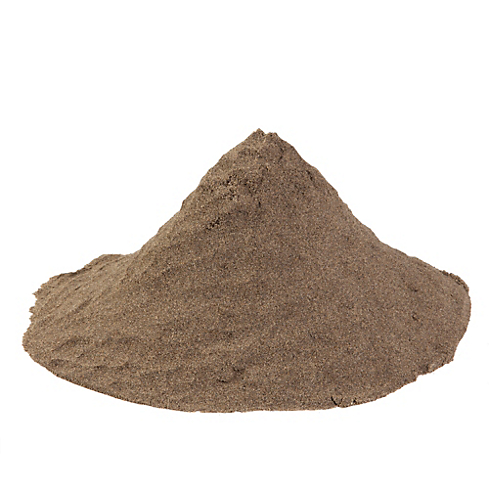
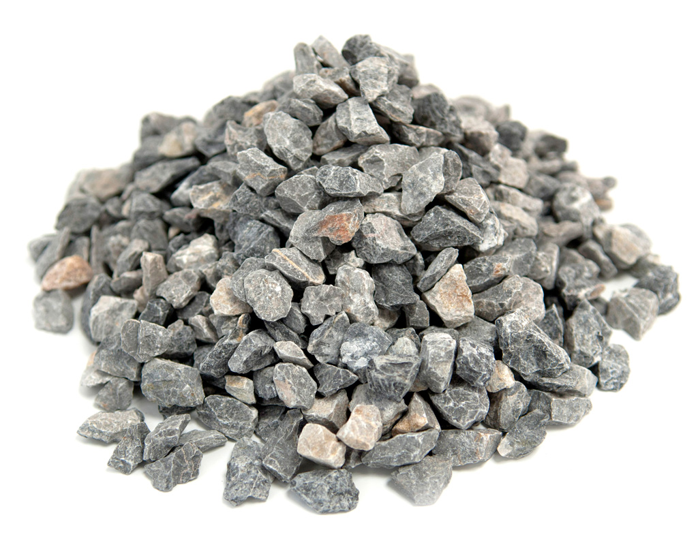
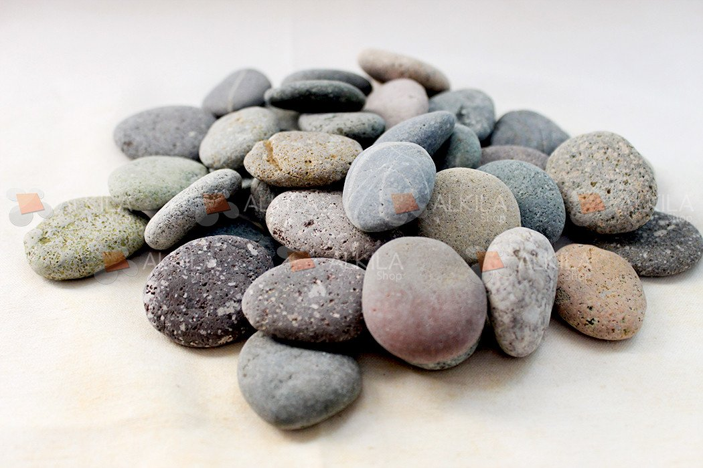
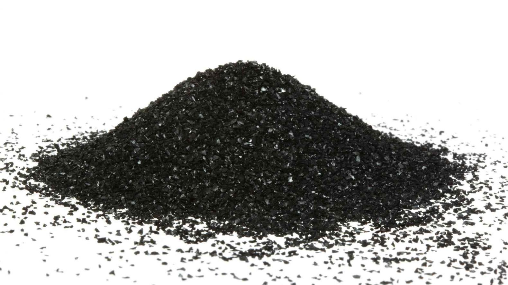
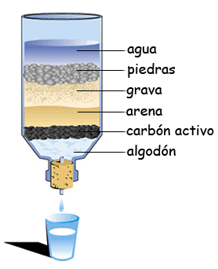

It serves to purify turbid water, eliminate impurities, which thanks to certain bacteria that develop in the carbon and the materials contained in the filter, and eliminate microorganisms that are harmful to our health. With the purpose that you can consume water free of impurities.

Materials

Plastic container

Fine sand

Gravel

Small rocks and medium stones

Activated carbon
Process
The container will be occupied so that the funnel-shaped part is the one located below in this small perforation should be made to allow the out of the water already filtered.Later with soap and water it will be washed perfectly
After the container is cleaned, it will be placed in a base that allows it to hold it and the liquid outlet.
The container will be filled with the materials mentioned.The layers of the materials should measures as indicated.
As seen in the following way:

• 15cm of medium stones
• 10cm of small rocks
• 3cm of gravel
• 3cm of carbon
• 2cm of gravel
• 5cm of fine sand
• 5cm of gravel
• 10cm of small rocks
When the filter is ready a test of it will be made, water with organic matter will be carried and a demonstration will be made of it works will be.
titulo
Aqui escribe el texto por favor
Conclusion
In the recent years, there has been a considerable shortage of drinking water.
Due to this problem, several efforts have been made to take advantage of the water to the maximum. And it is necessary to learn different ways to clean water at homemade.
What is sustainable development?
Satisfy the needs of the current society without compromising the stability of the future, that is, maintain a "sustainable" balance between people to develop strategies for the welfare of the world.
How does it contribute to this project?
It is related to sustainable development because it helps the environment. It is related to sustainable development because it helps the environment. since we can generate water savings and reuse we can use it in plants, for the toilet or wash the patio among others.
It is also very easy to do since it occupies materials that we commonly have in the home.